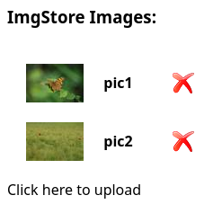

ImgFS: Image-oriented File System --- Webserver services
Introduction
Now that we have the low layers of a quiet generic HTTP server, we can start offering our first real ImgFS services.
The main goal of this last week is to provide over HTTP, the equivalent of the command-line interface (CLI) commands. When the server will be completed, it will implement the same functionalities as the CLI imgfscmd, with the exception of the create command, which remains available only through the CLI.
In index.html, we provide an example of a client code, written in Javascript (as many of today's web applications) that your can use in your browser to test your server. You can also use curl on the command line as an alternative client.
We will also take the opportunity to improve our server so has to handle multiple connections through multi-threading.
There are thus basically three things to be done this week:
- [ ~ 25% of the work ] allow the
listcommand to provide the content in JSON format, useful for Web clients; - [ ~ 60% of the work ] implement the ImgFS commands in HTTP (using the work of the last two weeks);
- [ ~ 15% of the work ] make our server multi-threaded.
As usual, we recommend you split the work over the team members. Moreover, remember the early advice and choose what you want to do, or not, in the remaining time.
Provided material
This week, we provide you with:
- new unit tests added into the former
tests/unit/unit-test-imgfslist.c; - new end-to-end tests in
tests/end-to-end/week13.robot; - and, in
src/week13_provided_code.txt, some code to be added tohttp_net.c.
Normally, the client code provided/src/index.html was already provided at the beginning of the project.
Tasks
1. List content in JSON format
1.0 libjson
1.0.a Installation
You will need the libjson library, which allows to parse and write data in JSON format. It is the standard format used for Javascript applications, easy to read both for the computer and a human developer (and much more simple than XML).
If your on your own machine and haven't already done it, start by installing the libjson library:
sudo apt install libjson-c-dev
To check if you have the correct version, use apt-cache show libjson-c-dev and check that the Homepage is https://github.com/json-c/json-c/wiki (there may be several variants of this library).
1.0.b Usage
To use the library:
-
the interface is defined in
<json-c/json.h>-- worth looking at; add theincludein all source files that needs the library; -
add the following lines to your
Makefile:# Add options for the compiler to include the library's headers CFLAGS += -I/usr/include/json-c # Add the library to the linker LDLIBS += -ljson-c
The API's documentation is located there: https://json-c.github.io/json-c/json-c-current-release/doc/html/
The functions you will need are:
-
json_object_put(); we can ignore its return value.
If any of the above functions returns an error, you must return ERR_RUNTIME.
1.1 Update do_list()
The first objective is to integrate the JSON format in the application imgfscmd; this part is independent from the web server integration and can be done in parallel, for example by your teammate.
For this, you have to complement the do_list() function so that if its output mode is JSON, it returns a string (rather than directly printing to stdout as it does when output mode is STDOUT).
The function must use the libjson library (see above) to build a JSON object with the following structure:
{
"Images": ["pic1", "pic2"] // an array of the strings of the img_id fields from the metadata
}
It is a JSON object containing an array of string, which are the img_id of the images in the filesystem, then converts it to a string to return it.
Beware of the lifetime/scope of the data you manipulate! Particularly, the string used in a JSON object are owned by the object, and are freed upon calling json_object_put() on it.
1.2 Tests
You can simply test you implementation by punctually editing do_list_cmd() and changing the call to do_list() so as to have JSON output rather than usual textual output and use imgfscmd list to test. For instance:
empty.imgfs -> { "Images": [ ] }
test02.imgfs -> { "Images": [ "pic1", "pic2" ] }
You can also (non exclusive) launch the two new unit-tests with:
make test-imgfslist
2. Develop the web server
2.1 Handle HTTP messages
The next thing to be done is to update handle_http_message() to serve our needs. For this:
-
create four functions
handle_list_call(),handle_read_call(),handle_delete_call()andhandle_insert_call(); these functions are the equivalent for our server of thedo_X_cmd()functions for the CLI and are detailed below;for the moment make them simply
return reply_302_msg(connection); -
adapt
handle_http_message()to call the appropriate function in each case (URI match either/list,/read,/deleteor/insert(and verb isPOSTin this later case; as already done last week) -
add a first condition which is:
if (http_match_verb(&msg->uri, "/") || http_match_uri(msg, "/index.html")) {
return http_serve_file(connection, BASE_FILE);
}
2.2 Handle list command
The server must answer with a valid HTTP response, using the JSON format, at the URI /imgfs/list. To achieve this, update the
handle_list_call() function so as to call do_list() with the proper format; and then replies.
The HTTP message that the list command must produce is:
HTTP/1.1 200 OK\r\n
Content-Type: application/json\r\n
Content-Length: XXX\r\n\r\n
YYY
This can easily be achieved with the functions that you implemented in the previous weeks (and the JSON update of do_list()).
Test this first functionality by launching your server and querying it with curl:
curl -i 'http://localhost:8000/imgfs/list'
(use curl -v if you want more information to debug).
2.3 Handle read command
Next, update the function handle_read_call(), equivalent to handle_list_call() but for the URI /imgfs/read.
This function must use http_get_var() to get the following arguments:
res: the resolution of the image queried; to be converted withresolution_atoi()(see thereadfromimgfscmd);img_id: the identifier of the image (its "name").
Those two parameters are required, but the order does not matter. Example of URI:
http://localhost:8000/imgfs/read?res=orig&img_id=pic2
Then call the function do_read() with the correct arguments.
On success, return the following HTTP response:
HTTP/1.1 200 OK
Content-Type: image/jpeg
Content-Length: <XXX>
<YYY>
The Content-Length must be the size of the image (in bytes).
Note: the lines above are, as always, terminated with "\r\n", which we do not write anymore for readability)
If an error occurs, call the function reply_error_msg().
Test with:
curl -i 'http://localhost:8000/imgfs/read?res=orig&img_id=pic1'
Test also error cases (missing argument, wrong resolution, ...).
2.4 Handle delete command
Implement the handle_delete_call() to answer the request at the URI /imgfs/delete.
Those requests only need one argument: img_id.
Once the argument (valid) recovered, call the do_delete(). If successful, return the following HTTP response to make the client reload index.html:
HTTP/1.1 302 Found
Location: http://<URL>/index.html
where <URL> is the HTTP address used by the server.
If an error occurs, call the function reply_error_msg(), as usual.
2.5 Handle insert command
Implement the function handle_insert_call(), the most complex one, to handle the URI /imgfs/insert.
The insertion logic is different from that used to return a list (list) or an image (read). Insertion uses the HTTP POST command, while the other two use HTTP GET. Basically, a GET contains all the arguments in the URI, whereas a POST has additional arguments in addition to the URI. In particular, the /imgfs/insert command uses a POST for the actual content of the image to be inserted.
To avoid overloading the server's RAM, large files are generally sent piece by piece ("chunk") in several successive POST. To simplify things in this project, we've set an image size limit in index.html that allows the image to be sent all at once in a single chunk. This avoids having to write the retrieval piece by piece and put it back together in the server!
The handle_insert_call() function must therefore essentially:
- retrieve the image name (parameter
name), which we'll use as an identifier to insert it into the database; - retrieve (put in the heap) the unique "chunk" corresponding to its (binary) content;
- insert the image into the ImgFS with
do_insert().
In the event of an error, be sure to return an appropriate error message.
If successful, proceed as with delete to redisplay the index page.
Finalization
Finally, since image processing uses the VIPS library (indirectly), don't forget to start it (VIPS_INIT) when you launch the server, and close it (vips_shutdown()) when you stop it.
Testing
To test your web server, simply launch your imgfs_server after having copied the provided index.html to your done/, then open http://localhost:8000/ in a web browser. You should get something like this (depending on the ImgFS with which you run your server; here the test02.imgfs -- which we always recommend you copy before your tests and test on the copy):

- Click on a red cross on the right to
delete. - Click on an image to view it in its original size (
read). - Click on the text "Click here to upload" to add a file (
insert).
You can also test URIs directly, e.g. http://localhost:8000/imgfs/read?res=small&img_id=pic1 to test the "small" resolution, directly in your browser, or e.g. on the command line (in another terminal):
curl -v 'http://localhost:8000/imgfs/read?res=small&img_id=pic1' --output myowntest.jpg
To test an insert with curl do things like:
curl -v -X POST 'http://localhost:8000/imgfs/insert?name=pic3' --data-binary @../provided/tests/data/brouillard.jpg
Finally, there's always make check, and then make feedback, available (tests performed via curl).
3. Multithreading
The main problem with the current server design is that we open only one single socket for the communication and that this socket is blocking: only one single communication can occur at a time. This is not convenient for a Web server... (try with several tabs to the same server in your browser).
The most advance way to solve this problem is to use polling non blocking connections (using poll() or even epoll() for larger servers).
In this project, we choose to implement a simplest way, also illustrating the lectures you soon had: multithreaded blocking connections.
Each socket will be open in a new thread, thus allowing several parallel communications to the server.
But then, of course, all access to the ImgFS shall be locked. (We here assume that any interaction with the ImgFS may change its internal state; thus any interaction with it must be locked for the other threads and unlocked as soon as the interaction with the ImgFS is over.)
In http_net.c:
It's the handle_connection() that will be threaded. So we first have to create a thread in http_receive(). However, in order to avoid race conditions between thread on the active file descriptor used to communicate (the one returned by tcp_accept()), this value has to be stored (on the heap) separately for each call to http_receive().
Concretely, in http_receive():
- make the value returned by
tcp_accept()be stored on the heap; and of coursefree()it whenever needed (don't forget error cases); let's name this value:active_socket(needed below); - create and initialize to
PTHREAD_CREATE_DETACHEDsome pthread attributes; seepthread_attr_init()andpthread_attr_setdetachstate()man-pages; notice that "detached" threads automatically release their resources on exit (but then there is no way to get their return value; we'll ignore them); - create a thread (see
pthread_create()) that will runhandle_connection()withactive_socketas a parameter. - Don't forget to release the
pthread_attr_twithpthread_attr_destroy().
Note: this is a practice exercise for programming threads in C. There is thus a part of understanding, reading man-pages, (asking questions,) on your side.
Now that handle_connection() is multi-threaded, we simply don't want the SIGTERM and SIGINT signals to be intercepted by it (but leave them to the main thread).
For this, simply add this code at the beginning of handle_connection():
sigset_t mask;
sigemptyset(&mask);
sigaddset(&mask, SIGINT );
sigaddset(&mask, SIGTERM);
pthread_sigmask(SIG_BLOCK, &mask, NULL);
Notice also that since handle_connection() is now multi-threaded, we have to close and release its active_socket on exit (which, depending on your design, was maybe previously handled by http_receive()).
Finally, in imgfs_server_service.c, we have to lock all access to the ImgFS:
- declare a global variable of type
pthread_mutex_t; - initialize it in
server_startup()(seepthread_mutex_init()man-page); and release it inserver_shutdown()(seepthread_mutex_destroy()); - add a lock (
pthread_mutex_lock()) and unlock around all yourdo_X()calls (all the calls that interact with the ImgFS data).
Test the multithreaded approach by launching several client at the same time: multiple tabs in your browser and multiple curl calls.
Final submission
So this is the end! Next week will indeed be "free", no new content, only to finalize your project before the deadline which is:
SUNDAY JUNE 02, 11:59pm
For this deadline, there is nothing special to be done, except to commit and push, and to provide a (short) README.md file which must contain:
- what you did and what you did not in the project (= up to where you went);
- any particular remark about your project (specific aspect, changes in the conception, ...);
- anything else you want us to know (about the project).
Don't forget to push everything before the above deadline. The content of your project will be the state of your main branch at the deadline (in case this is relevant for you: thus don't forget to merge your branch(es) into the main branch).